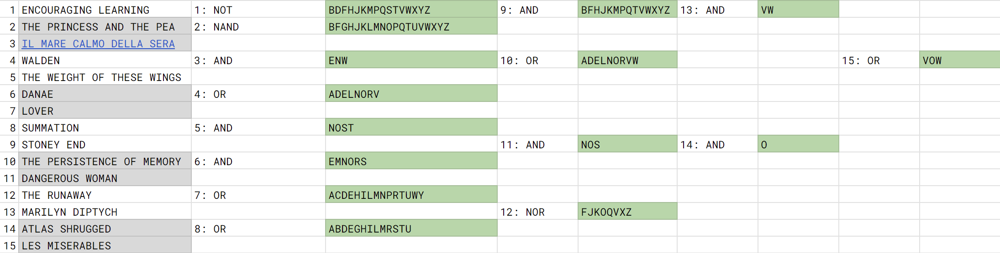

Solution: Notable and Honored
Answer: VOW
Written by Jonathan
First identify the 15 objects, which are grouped into 5 album/song titles, 5 books (in 1 case a poster), and 5 paintings. As the title suggests, we also want to know the people who published/wrote/painted these items. Now, while these people and/or things are indeed famous, they probably are not the most famous examples, and we would want to consider why these specific people and/or things were chosen. Looking back to the title, we notice the words “Not”able “and” Ho“nor”ed have substrings that are logic gates! We can apply the same to each person’s name:
| Number | Name of Work | Name | Logic gate |
|---|---|---|---|
| 1 | Encouraging Learning | James Nottingham | NOT |
| 2 | The Princess and the pea | Hans Christian Anderson | NAND |
| 3 | Il mare calmo della sera | Andrea Bocelli | AND |
| 4 | Walden | Henry David Thoreau | OR |
| 5 | The Weight of These Wings | Miranda Lambert | AND |
| 6 | Danae | Rembrandt | AND |
| 7 | Lover | Taylor Swift | OR |
| 8 | Summation | Arshile Gorky | OR |
| 9 | Stoney End | Barbra Streisand | AND |
| 10 | The persistence of memory | Salvador Dali | OR |
| 11 | Dangerous Woman | Ariana Grande | AND |
| 12 | The Runaway | Norman Rockwell | NOR |
| 13 | Marilyn Diptych | Andy Warhol | AND |
| 14 | Atlas Shrugged | Ayn Rand | AND |
| 15 | Les Misérables | Victor Hugo | OR |
All that’s left to do is to plug the paintings into the bracket entries, and the logical operators into the corresponding numbers.

The final answer is VOW.